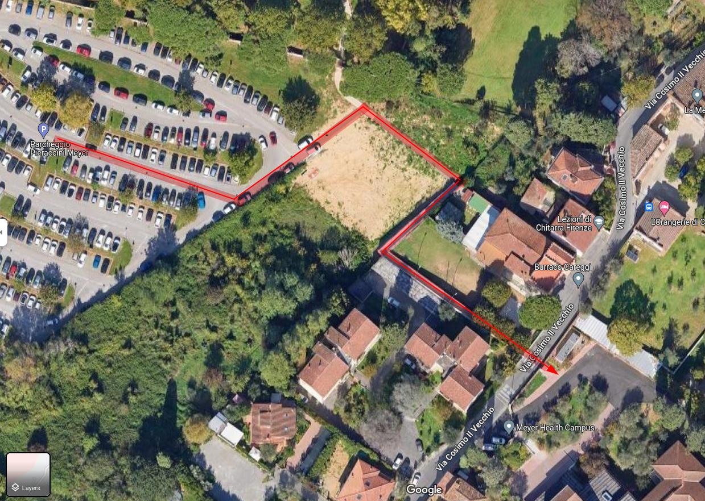

How to reach the Venue
To reach the venue located at the Mayer Health Campus, Via Cosimo Il Vecchio, 26, 50139 Firenze, you have two options:
Walking
- Take the T1 tram line to the terminus “Careggi Ospedale”.
- From there, it is a 15-minute walk to "Pieraccini Meyer" parking lot. You can follow the route provided in the embedded map.
- Once you arrive at the Pieraccini Meyer parking lot, take the pedestrian path to the Meyer Health Campus (approx. 2 min walk). The pedestrian path is highlighted in the image at the bottom of the page.
- Note: Considering number of seats available, potential traffic congestion, and other delays, walking might be the faster and more reliable option.
Shuttle Service
Alternatively, a free shuttle service, organized for ISSRE, is available in the immediate vicinity of the T1 tram line terminus “Careggi Ospedale”.
- The shuttle pickup point is on the side of the T1 tram terminus (see starting point in the map below).
- Shuttles depart approximately every 10 minutes.
- The shuttle service is available at the following times:
- 7.30 to 9.30 and from 16.00 to 18.00 on the 9th, 11th, and 12th of October 2023
- 7.30 to 9.30 and from 16.00 to 21.00 on the 10th of October 2023
Tickets for the Tram and Bus Tickets can be obtained in the following ways:
- Through authorized dealers, usually bars, newsstands, and tobacconists.
- Using the official "at bus" application for Android and iOS.
- Sending an SMS to +39 488 01 05 with the text “Firenze” (this option is only valid with the italian line operators Tim, Vodafone, and Wind operators).
Taxi and Uber
Taxis can be reserved by calling the phone number +39 0554242 or by utilizing the official app appTaxi for Android and iOS.
As Uber is served in Florence as rental with drivers, Uber fares are usually considerably more expansive than taxi services.
